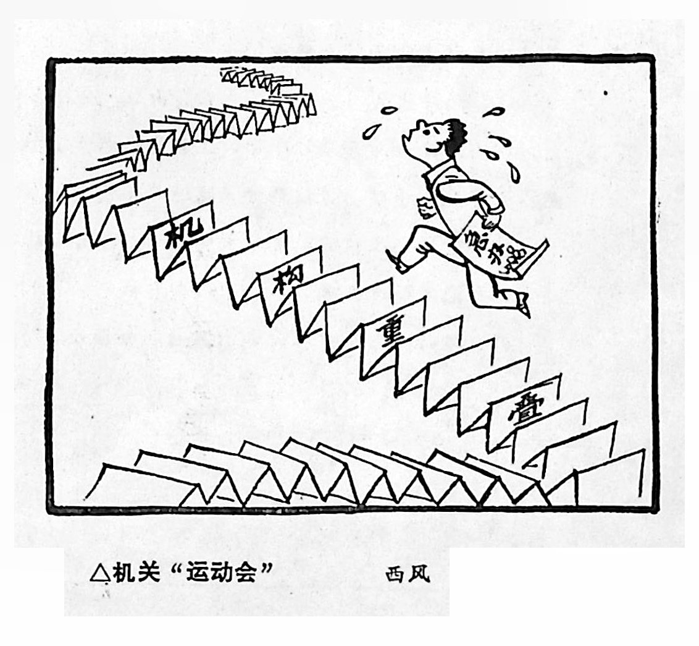

西风 《人事》1986年第1期（总第4期），封三
机关"运动会"
The Office "Sports Meet"
- Text in the drawing
- 机构重叠
Overlapping agencies - Description
- A cadre clutching a document runs a hurdles course whose hurdles, stacked into a staircase, spell 机构重叠 (overlapping agencies).
- Artist
- Xi Feng 西风
- Published in
- 《人事》1986年第1期（总第4期）, inside back cover
- Themes
- Overstaffing and overlapping agencies · Paperwork and documents · Bureaucratism

Cite
Xi Feng, “机关"运动会"” [The Office "Sports Meet"], Renshi (Personnel) 《人事》, 1986, no. 1, inside back cover.